Direct connection to Praxis
The Praxis-Vulcan connection allows:
-
The Programs page in Vulcan displays layouts from Praxis’ production queue.
-
Operators can edit these layouts and save them back to Praxis.
-
Operators can run the programs. The run progress is reported back and is reflected in Praxis.
-
Operators can Add/Remove/Update LTT pages in Vulcan and push the updates to Praxis enabled Flux stations.
Loading Programs into Vulcan
Launch Praxis and Vulcan. Switch to Praxis and import Job spreadsheets from the C:\Program Files\Metamation\Praxis\Samples\Jobs folder. (Or load some parts and create new Job from the part library). Select a job, right click, and use the Plan Job panel command. Select a bend machine. Repeat Plan Job (previous step) and select Proteck Dual Head machine from the menu
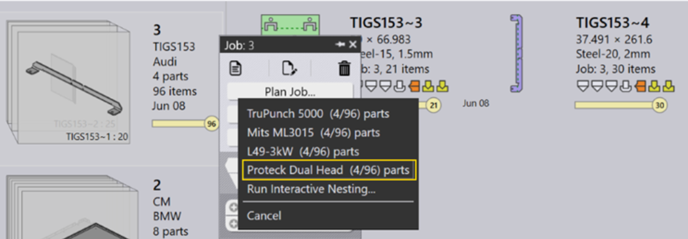
Nests start appearing after a few seconds. Right click and use Send to Machine… command to send the layouts to Vulcan.
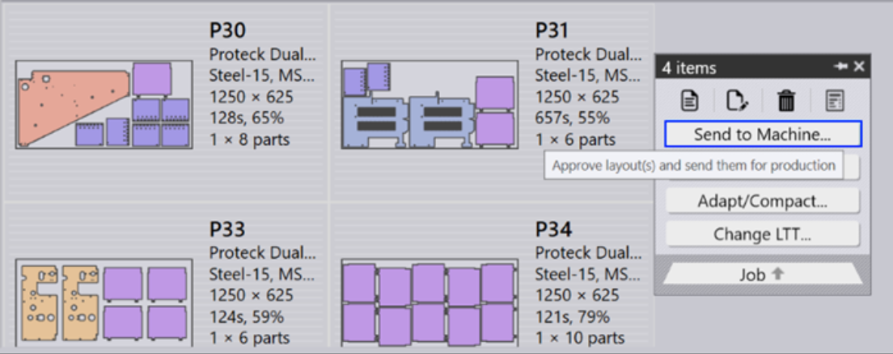
Launch Vulcan and switch to Programs page. It lists programs to run in Proteck Dual Head queue. The program tiles display job details like sheets to run, estimated machine-time-per-sheet, Praxis raw-materials etc.
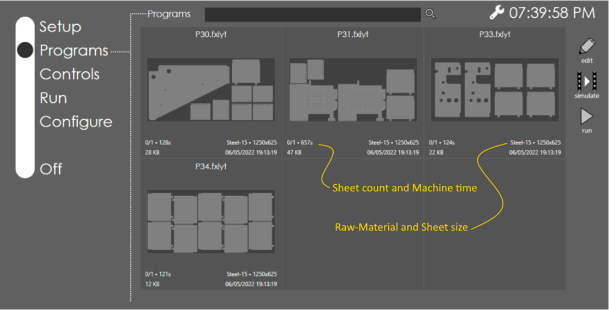
The program list is updated as layouts are sent/recalled from Praxis. Programs are automatically refreshed when layouts are edited in Praxis. Use the search box to search the programs by name, raw-material or LTT table. The examples below show results of programs searched by 1. raw-material and 2. LTT.
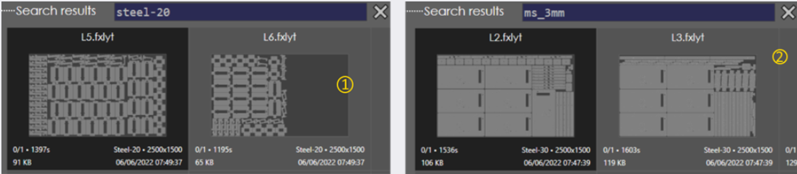
Removing programs from the queue
Switch to Praxis Job page or go to the nests tab. Select one or more layouts, right click, and use the Recall from Machine… panel command to remove the layouts from the production queue.
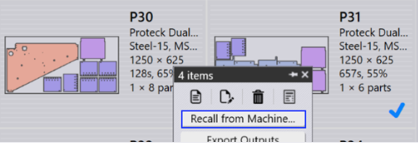
The Vulcan program list is automatically updated with the updated queue.
Running Programs
Select a program and use the run command to load the program for running.
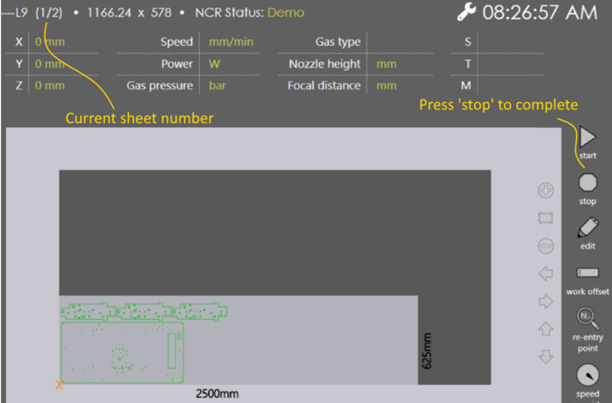
Praxis Job and Part statuses are updated to reflect the parts-in-progress. The Layout is checked-out to prevent updates while program is loaded on the machine.
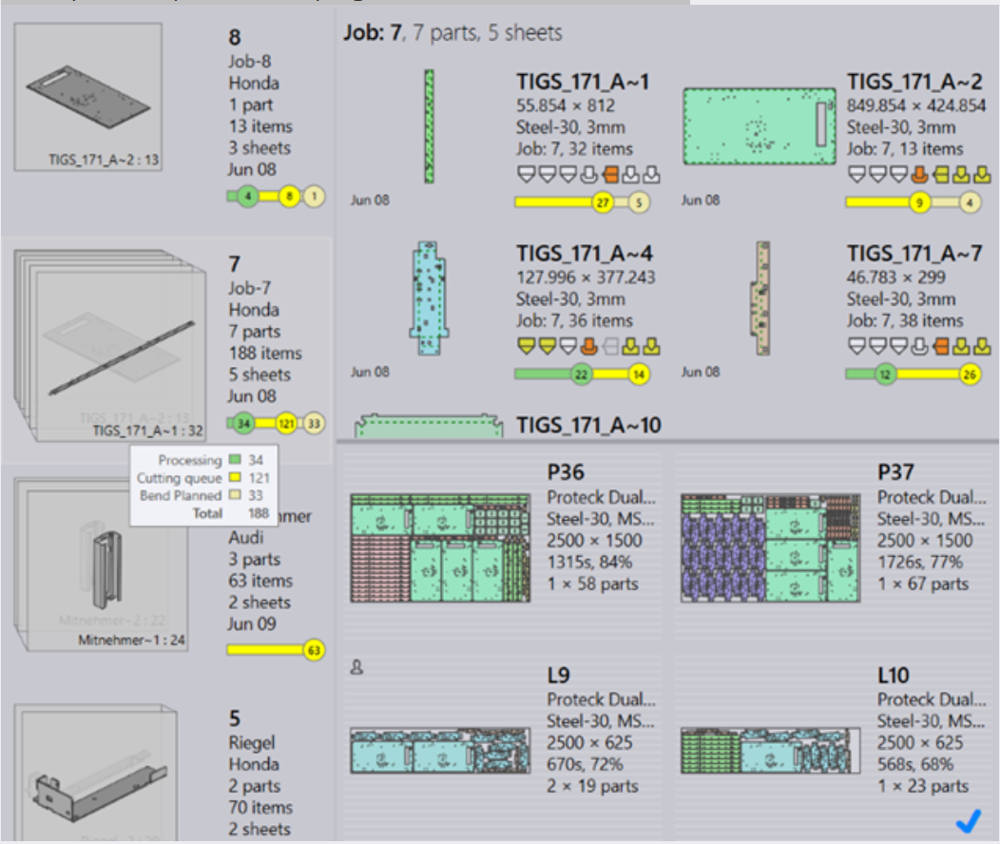
Press the stop[1] button on the run page to mark the current sheet as complete. The job is updated with the completion status. Repeat this to mark all sheets as completed. Once completed program is unloaded and it is removed from the machine production queue and the job/part/layout statuses are updated in Praxis.
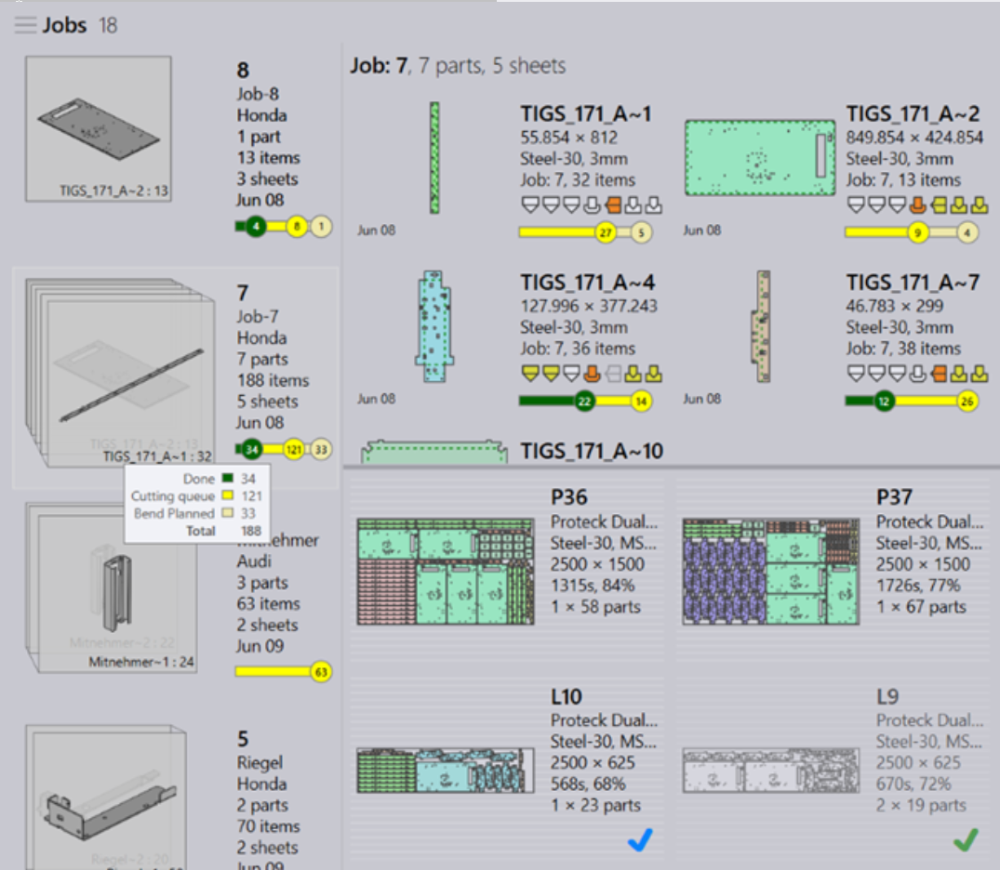
Editing Programs
Select a Program in the programs list and use edit command to edit the program. The layout is checkout from the Praxis and is locked for editing. Update the program in Vulcan and press on done button to save the changes back to Praxis. Praxis checks the layout for validation errors and adds it back to the production queue if everything is OK.
LTT synchronization
When linked to Praxis, the same LTT is used in Vulcan, Praxis and Flux. Vulcan becomes the LTT master and owns the technology tables. All edits made at Vulcan are pushed to all Praxis + Flux stations on the network. Illustration:
Switch to the Configure page and click on the Laser Database button.
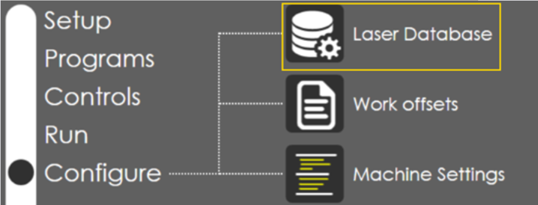
Open Praxis or Flux to confirm the existing laser data.
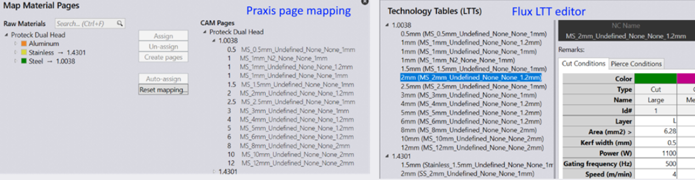
Open the page lists again in Praxis/Flux. The cloned page should be listed.
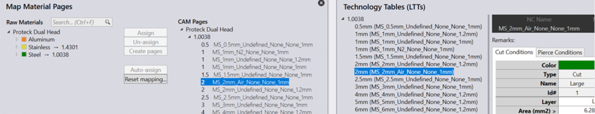